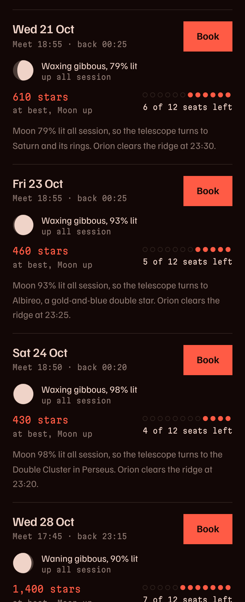
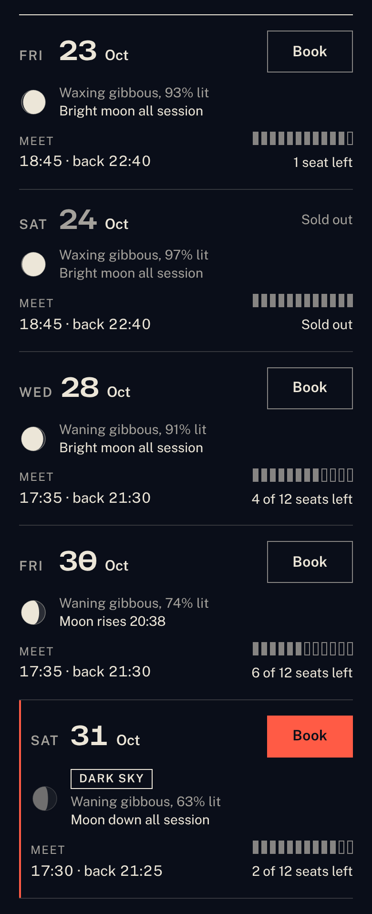
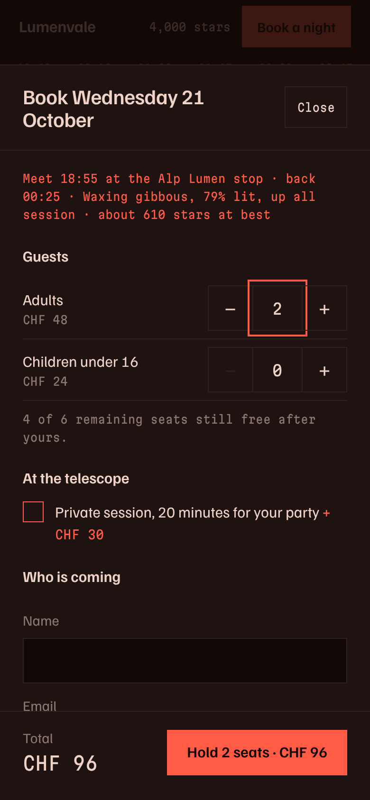
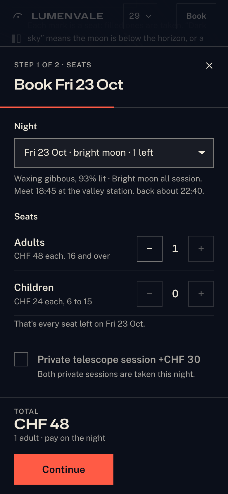
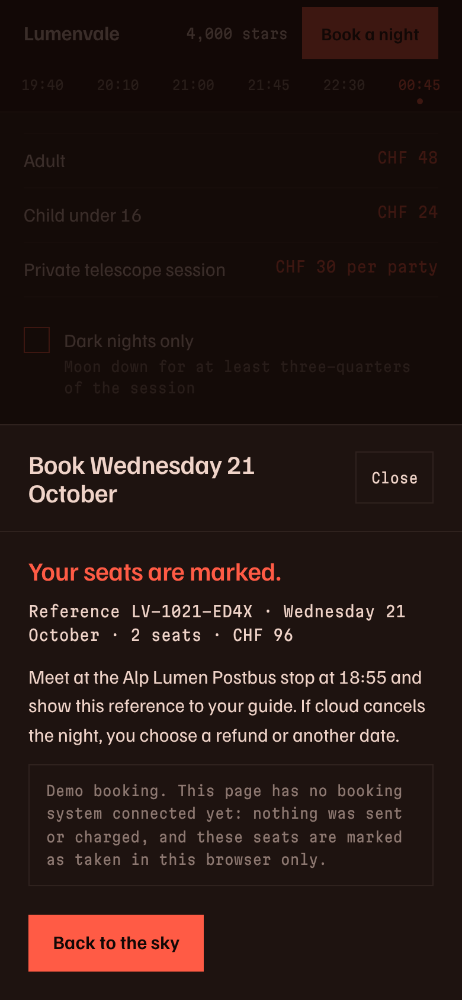
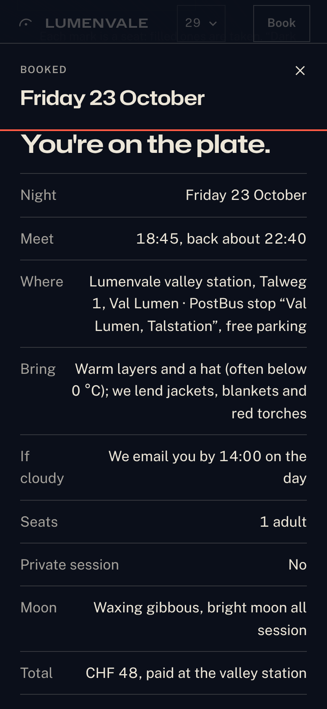

AAwards
Jury __AW__ · __ADISP__
Open Exhibit A full size ↗
The Lumenvale case · UXL-DEMO-002 · 20 Oct 2026
Two fresh Claude Code sessions got the same prompt: an award-worthy site for Lumenvale, a fictional dark-sky observatory in the Swiss Alps. Both ran the same model at effort xhigh with the awards plugin, a pipeline of skills built to win Site of the Day. Exhibit B also had UXL installed. The prompt names neither skill and never says “UX”.
We’re Lumenvale, a (fictional) dark-sky observatory high in the Swiss Alps. We run guided stargazing nights for small groups of 12: CHF 48 for adults, CHF 24 for kids under 16, with an optional private telescope session for CHF 30. Build our website as a single self-contained index.html: inline all CSS and JS. Libraries like GSAP, Lenis or Three.js are fine, but install them from npm and inline them, because the page can’t load anything from a CDN. Google Fonts are OK, but no external images, so draw everything with CSS, SVG, canvas or WebGL. It should be award-worthy, the kind of site that wins Site of the Day, and tell the story of a night at Lumenvale. It needs our upcoming nights with the moon phase and seats left, and a way to book tickets for a night. It has to work great on phones and desktop.
The exhibits · live
These are the real, unedited files. Each one computes its calendar from today’s date, so the nights are live. Scroll inside a frame and book a night. Nothing leaves your browser.
The scoreboard
After both sessions ended, each page went to a fresh session that ran the awards jury on the file alone. The folders were renamed, so the juror could not tell which exhibit it was judging. Weights are the jury’s own: Design 40, Usability 30, Creativity 20, Content 10. Site of the Day territory starts at 7.2 with no axis under 6.8.
| Axis (weight) | Exhibit A · awards | Exhibit B · awards + UXL |
|---|---|---|
| Design (40) | __AD__ | __KD__ |
| Usability (30) | __AU__ capped at 6 | __KU__ |
| Creativity (20) | __AC__ | __KC__ |
| Content (10) | __ACo__ | __KCo__ |
| Weighted | __AW__ | __KW__ |
| Disposition | __ADISP__ | __KDISP__ |
__JURYNOTE__
| Measure | Exhibit A · awards | Exhibit B · awards + UXL |
|---|---|---|
| UXL runtime audit score | 90 / 100 | 96 / 100 |
| UXL static lint score | 94 | 94 |
| Filled Book buttons in the nights list | 16 of 16 | 1 of 27, on the recommended night |
| Filled buttons in the first phone screen | 2 | 1 |
| Body text on phones | 15 px | 17 px |
| Booking says when you pay | no | yes, at both steps and on the ticket |
| Confirmation tells you | meeting stop and time | address, bus stop, parking, what to bring, the cloud plan, a calendar file |
| Skip link with full motion on | focus stays on the link | focus moves to the content |
| In-session awards jury, final round | 7.42, Usability 7.0 | 7.81, Usability 7.8 |
Scanner scores are heuristics, and this is one run per condition. The in-session juries each judged their own build mid-session, so only the blind run compares like with like. Raw data: data.json, audit A, audit B, blind jury A, blind jury B, UXL case file.
How the two skills worked together
Both sessions walked the same awards pipeline, from direction to ship. Session B added two UXL steps on its own: the skill before it built anything, and the auditor before it shipped.
awards skillUXL, called by the session itself
Right after awards:structure laid out the chapters, session B called UXL with this brief, verbatim:
Apply the laws to the booking flow and navigation.
It then read UXL’s specs for navigation, calls to action, forms, modals and multi-step flows, and wrote phone layouts and accessibility notes into its page map. The idea of opening on the next dark night came from awards:structure, before UXL was called.
The awards jury asks what a Site of the Day juror sees: it scores captures of every chapter on Design, Usability, Creativity and Content. The UXL auditor asks what a visitor runs into: it booked seats in a real browser at 390, 375 and 1440 px and measured. Its case file came back with 0 critical, 5 major and 7 minor findings, each citing a law.
The awards:ship skill takes its fixes from the jury report. Session B handed it the UXL case file as well, verbatim:
Also fold in the UXL auditor's case file (0 critical, 5 major: M1 mobile two filled Book buttons via CSS specificity main.css:108-109; M2 calendar rows lack a 'Dark sky' tag …
Ship fixed all five majors in one pass, next to the jury’s three craft fixes. The counts below follow each one from the case file into the code.
The counts
Each count quotes the UXL auditor’s finding on Exhibit B, shows the line that shipped, and puts Exhibit A, which had no auditor, next to it. The jury caught the first one too. The other four came from UXL alone.
Emphasis only works when it is rare. Exhibit A paints every Book button in the list the same torch red, so 16 equal buttons compete and none leads. Exhibit B fills only the night it recommends and outlines the rest. Its auditor also found a CSS bug that put two filled Book buttons on a phone screen at once.
UXL case file, verbatimOn phones, two filled orange "Book" buttons compete through most of the story, and they lead to different places. This is a CSS specificity bug.


/* main.css: the filled header Book is desktop-only now */
@media (min-width: 768px) {
.bar.is-solid:not(.is-calm) .bar__book { background: var(--accent); color: var(--on-accent); border-color: transparent; }
}FindingExhibit A dilutes its call to action. Exhibit B compliant after the fix.
Neither page takes payment. Exhibit A never says so: its button reads “Hold 2 seats · CHF 96”, and its cloud policy offers “a refund”, which implies money already changed hands. Exhibit B states the terms in the calendar intro, under the total on both booking steps, and on the ticket.
UXL case file, verbatim"Reserve 2 seats · CHF 96" next to a big total looks like a charge. Hesitant users drop out right before the one fact that would reassure them.


totalNote.textContent = `${parts.length ? parts.join(' · ') : 'No seats yet'} · pay on the night`; // booking.js
<p class="booking__pay">No payment now. You pay at the valley station by card or TWINT; cancel free until 24 hours before.</p>FindingExhibit A leaves the price looking like a charge. Exhibit B compliant.
The confirmation is the screen people keep. Exhibit A gives a reference, the bus stop and the meeting time. Exhibit B’s ticket adds the address, parking, what to bring, how a cloud cancellation will reach you and what you will pay, plus a calendar file with the location in it.
UXL case file, verbatimTask 3 ("know when and where to meet") is only half served at the step people screenshot and keep.


['Where', 'Lumenvale valley station, Talweg 1, Val Lumen · PostBus stop “Val Lumen, Talstation”, free parking'],
['Bring', 'Warm layers and a hat (often below 0 °C); we lend jackets, blankets and red torches'],
['If cloudy', b.phone ? 'We email and text you by 14:00 on the day' : 'We email you by 14:00 on the day'],FindingExhibit A is adequate. Exhibit B ends on a complete ticket.
A dark sky is the reason to pick one night over another. Before the fix, Exhibit B’s filter, hero and booking used three different words for it, and the rows used none. It now tags dark rows “Dark sky”, dims the moon when it stays below the horizon, and defines the term once in the legend. Exhibit A reached a good answer on its own route: each row gives an expected star count.
UXL case file, verbatim"Dark", the attribute task 1 depends on, is hard to read in the calendar rows.
${n.dark ? '<span class="night__tag">Dark sky</span>' : ''} // schedule.js, every calendar row
.moon.is-down { opacity: 0.45; } /* main.css: a moon below the horizon reads as absent */FindingBoth compliant at hand-off, by different routes.
In Exhibit B, finishing a booking re-rendered the calendar and deleted the button that had opened the dialog, so keyboard focus fell back to the top of a 9,000 px page. The fix sends focus to the booked night. Exhibit A handles this case: its close handler falls back to the night’s Book button.
UXL case file, verbatimKeyboard and screen-reader users lose their place on a page about 9,000px long, at the end of the main task.
const back = trigger && document.contains(trigger) ? trigger : night && (document.querySelector(`#${night.id} .night__book`) || document.getElementById(`${night.id}-t`)); // booking.jsFindingExhibit A compliant. Exhibit B’s bug caught and fixed before hand-off.
For the record
Verdict
__VERDICT_P__
Reproduce it
Same prompt, same model, effort xhigh, two empty folders. Both get the awards plugin; B also gets UXL. Then score both with UXL’s scanners and a blind awards jury.
git clone https://github.com/BurgiSimon/awards
git clone https://github.com/BurgiSimon/UXL
mkdir a b
# Exhibit A: awards only
(cd a && claude -p "$(cat ../PROMPT.txt)" --model "$MODEL" --effort xhigh \
--plugin-dir ../awards/plugins/awards)
# Exhibit B: awards + UXL
(cd b && claude -p "$(cat ../PROMPT.txt)" --model "$MODEL" --effort xhigh \
--plugin-dir ../awards/plugins/awards --plugin-dir ../UXL)
# The evidence
python3 UXL/tools/build_demo.py --without a --with b --prompt PROMPT.txt --slug lumenvale
node UXL/tools/demo_evidence_lumenvale.mjs
# The blind jury: copy each index.html into a neutrally named folder, then
(cd site-k && claude -p "/awards:jury index.html --verdict" --model "$MODEL" --effort xhigh \
--plugin-dir ../awards/plugins/awards)